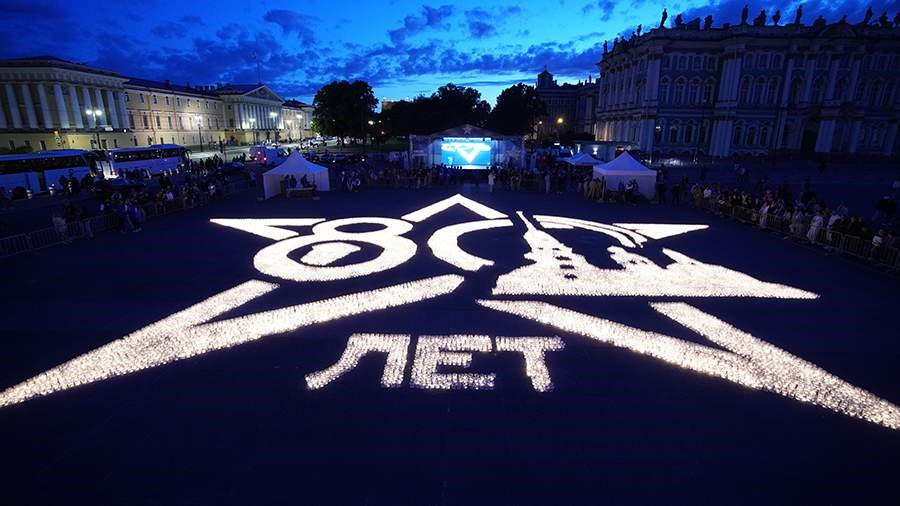
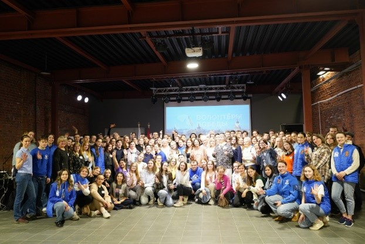

САНКТ-ПЕТЕРБУРГСКОЕ РЕГИОНАЛЬНОЕ ОТДЕЛЕНИЕ ВСЕРОССИЙСКОГО ОБЩЕСТВЕННОГО ДВИЖЕНИЯ «ВОЛОНТЕРЫ ПОБЕДЫ»
Региональный проект «Наши Победы» проводится для добровольцев Санкт-Петербургского регионального отделения Всероссийского общественного движения «Волонтеры Победы» (далее – Региональное отделение). В ходе реализации Проекта набран волонтерский корпус из 800 человек, 200 из которых помогали в организации мероприятий, приуроченных к 79-ой годовщине Победы в Великой Отечественной войне, Всероссийская акция «Свеча Памяти», День военно-морского флота, Всероссийская акция Сад Памяти, 600 - в проведении Квестов и Интеллектуальных игр на территориях ВУЗов, СПО и школ Санкт-Петербурга.
В рамках подготовки к мероприятиям участникам предлагалось пройти обучающую программу, включающую в себя мероприятия образовательной, просветительской и культурно-досуговой направленности.
Уникальность проекта заключается в том, что было набрано рекордное количество волонтеров, обученных созданию и проведению Квестов и интеллектуальных игр за всю историю регионального отделения, организована системная работа с дальнейшей интеграцией волонтеров в работу районных штабов и общественных центров на базе ВУЗов и СПО.
Образовательная программа разработана региональным отделением с привлечением профильных специалистов. Для подготовки добровольцев проведено обучение, включающее в себя мотивационно-образовательный модуль и модуль функционального обучения добровольцев. Основная локация проведения образовательной программы – молодежные площадки Санкт-Петербурга. Обязательными к изучению являются следующие темы: историческое просвещение через интерактивные форматы, специфика работы с ветеранами, особенности работы в команде, работа в стрессовых ситуациях и ситуациях неопределенности, эмоциональный интеллект, ораторское искусство и др. В рамках образовательной программы волонтеры также больше узнают о деятельности регионального отделения и молодежной политике города.
 Количество благополучателей: 10000 человек.
Количество волонтеров: 800 человек.